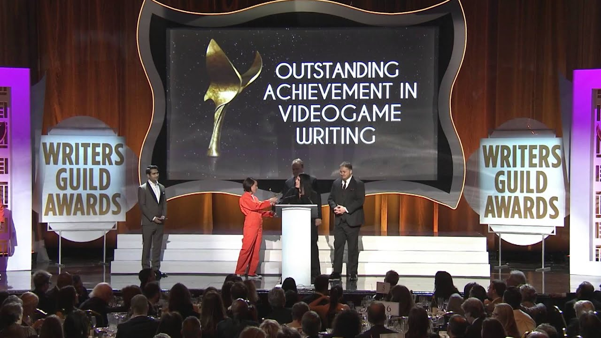

If you follow movie news, especially at this time of year, you've certainly heard the expression "gold rush" – a phenomenon that repeats itself annually, stirring up excitement in release calendars and betting pools. The "gold" in question can be understood both as the Oscar statuette (the most coveted of all) and as the collection of awards distributed to films and their creators during this season.
But why so many awards? – you might be wondering. The answer lies in the jury groups that make up each organization and, therefore, choose their favorites based on criteria that are not always the same.
To help you better understand the major film awards—and finally figure out why your favorite movie never wins that coveted statuette—we’ve listed the most popular events, their juries, and their unique characteristics.
1 - People’s Choice Awards
The audience serves as the jury in the most democratic award of the year. With open voting that can be done online in just a few clicks, the People’s Choice Awards tends to reflect box office results, honoring the most charismatic artists and major blockbusters. The award also extends to music and television. "Fast & Furious 7" and "The Martian" were among the winners in 2016.
2 - Golden Globe Awards
Based in Los Angeles, the Golden Globe Awards recognize the best in film and television, as voted on by critics from outside the US (members of the Hollywood Foreign Press Association). Contrary to popular belief, the Globes don't serve as a 'preview' for the Oscars, as the jury members are quite different. What happens is that the list of nominees tends to be similar, as both take place in the first half of the year and favor mainstream cinema (with established actors and directors). Unlike other awards, however, the Globes separate winners into 'Drama' and 'Comedy or Musical' categories - which can lead to great injustices, such as the victory of 'The Martian' as Best Comedy in 2016.
3 - Critics' Choice Awards
Like the Golden Globes, this award also considers the judgment of critics. The difference is that, here, the voters are American journalists. In practice, the nominees don't vary much, but the proximity to the Hollywood industry makes this jury's choice closer to the Oscars. 'Spotlight' was the big winner in 2016.
4 - Producers Guild Awards
Like the SAG Awards, the PGA is also dominated by the industry. In this case, it's the producers who vote, and therefore, all categories are related to production. The exception is the 'Best Documentary' award.
5 - Screen Actors Guild Awards
Affectionately known as the SAG Awards, this is an award given by the Screen Actors Guild. Consequently, all award categories are related to acting – whether individual or ensemble performances. Together, the guild awards offer a highly reliable indicator of the Oscars, where those who vote are industry professionals.
6 - Directors Guild Awards
The directors' guild also awards its favorites in film and television. The categories are all for Best Direction, with a focus on different genres and formats.
7 - Writers Guild Awards
The Writers Guild Award is one of the most important among the guild awards. Here, screenplays for both films and television series compete, and the most compelling stories of the year are awarded.

8 - Spirit Awards
Going against the grain of its competitors, the Spirit Awards aims to celebrate independent cinema. The truth is that not all of the nominees are entirely independent (this year, 12 Years a Slave and Inside Llewyn Davis are in the running), but the idea, at least in theory, is to recognize 'art house' cinema over 'blockbuster' cinema.
9 - Golden Raspberry Awards (Razzies)
Inseparable from the Oscars, the Golden Raspberry Awards or Razzies celebrate the 'worst of the year.' Curiously, some nominees are renowned artists who have even won Oscars, such as Halle Berry and Sandra Bullock.
10 - Oscar (Academy Awards)
Despite the variety of award shows, the Oscars remain the most beloved by movie fans. Year after year, unfortunate hosts take to the stage to deliver bad jokes or make fools of themselves dancing and singing, inviting other celebrities to announce the nominees or commenting on the pop performances that liven up the party. Despite this, we remain faithful to the most ostentatious award ceremony of all, rooting for the artists as much as for their outfits. Here, the voters are industry professionals – actors, directors, designers, composers...